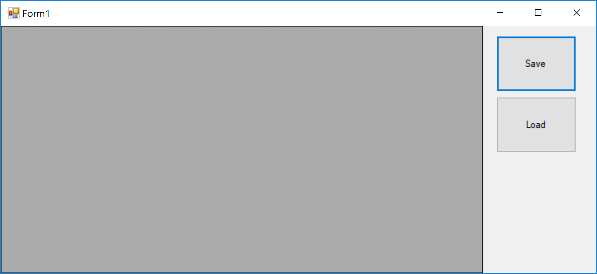
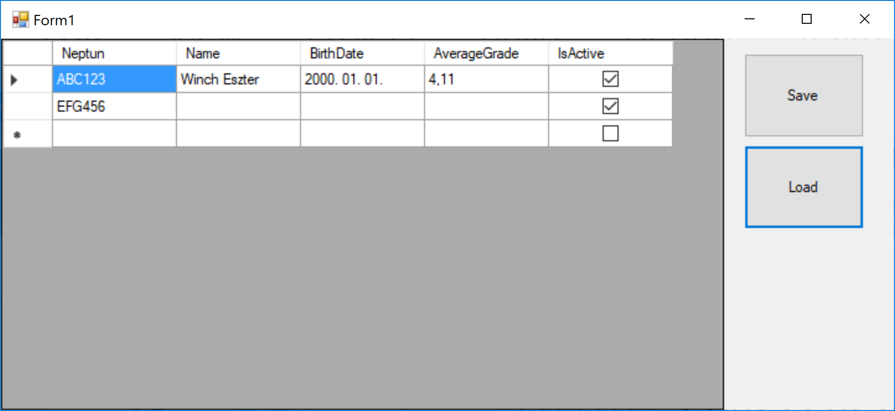
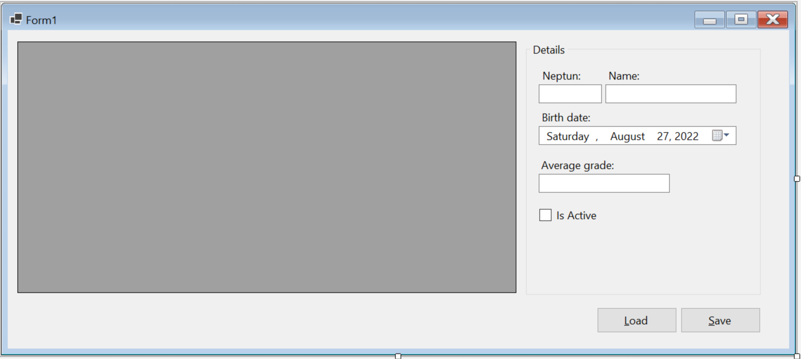
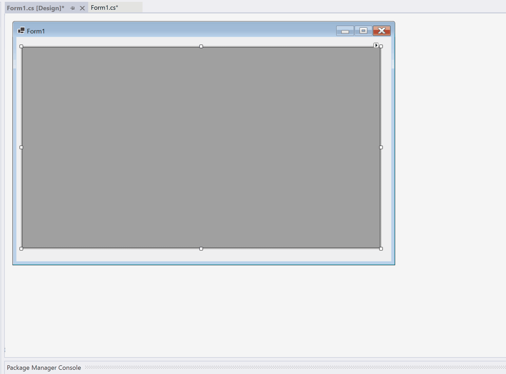
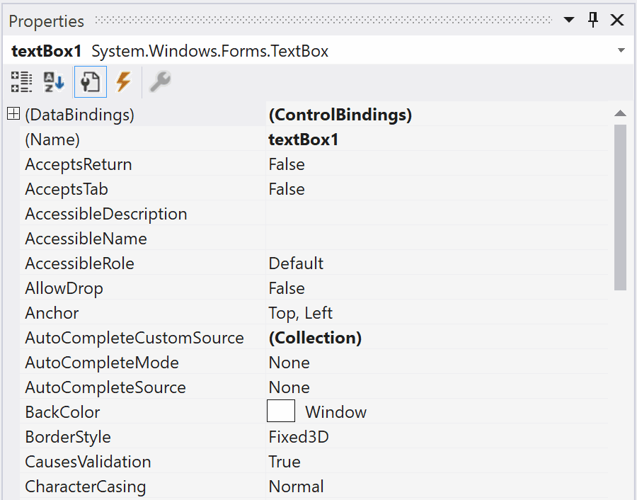

Hands-On Lab: In memory adatbázis
Gyakorlat célja
A Software Engineering tárgy során a korábban megszokotthoz képest szignifikánsan nagyobb adathalmazokkal fogunk dolgozni. Az előző félévben felépítettünk egy kvízjátékot, aminek a tartalmait egy szöveges fájlból olvastuk ki egy-egy UserControl-ba. A feladat a memóriában végzett adatkezelés témakörét készítette elő.
Ezen a gyakorlaton az adatainkat CSV (Comma Seperated Values) formátumú fájlokban tárolni. Ebben a fájltípusban az egyes sorokban vesszővel elválasztva szerepelnek az adatok. Néhány nyelv azonban (köztük a magyar is) a számokban tizedesvesszőt használ pont helyett, így nem ideális a vesszővel történő elválasztás. Emiatt a nyelvi beállításoktól függően érdemes meghatározni, hogy vesszőt vagy pontosvesszőt használunk a CSV fájljainkban. Az egyszerűség kedvéért mi minden esetben pontosvesszőt használunk majd.
Ebben a példában fájlból olvasás mellett a fájlba írásra is nézünk példát.
Videók
Az alábbi videókat érdemes lehet a feladatmegoldás előtt megnézni.
(!Vid) 1. rész
(!Vid) 2. rész
(!Vid) 3. rész
A megoldás lépései
1. Hallgató osztály létrehozása
A Student osztályt minden példánya egy-egy hallgató adatait tartalmazza majd. Ez az osztály írja le, hogy milyen tulajdonságokkal rendelkezzen egy-egy hallgató. Egy Student típusú elemekből álló lista gyakorlatilag egy memóriában tárolt adatbázistáblának feleltethető meg.
(+/-) A SolutionExplorer-ben hozz létre egy Models nevű mappát! (A mappa neve egyébként tetszőleges.)
(+/-) A Models nevű mappában hozz létre egy osztályt Student néven egy külön fájlba! Ezt az osztályt kizárólag hallgatói adatok tárolására fogjuk használni.
A létrejövő kódban érdemes megfigyelni, hogy a névtérbe bekerült a projekt és a mappa neve is! Az osztályra a Models.Student néven lehet az InMemoryDB névtérből hivatkozni.
...
namespace InMemoryDB.Models
{
internal class Student
{
}
}
(+/-) Hozd létre az alábbi tulajdonságokat a Student osztályon belül, és állítsd access modifier-t public-ra:
| Megnevezés | Adattípus | Leírás |
|---|---|---|
| Neptun | string | Neptun-kód |
| Name | string | teljes név |
| BirthDate | DateTime? | születési dátum |
| AverageGrade | decimal? | tanulmányi átlag |
| IsActive | bool | aktív-e a hallgató az adott félévben |
Note
A C# nyelvben a változótípus után tett kérdőjellel jelöljük az úgynevezett nullable type-okat. Az ilyen típusú változók a megszokott értékeken kívül felvehetik a null értéket is. Ezzel lehetőséget adunk a felhasználónak, hogy bizonyos értékeket ne állítson be, a példában tehát a születési dátum és a tanulmányi átlag lehet ismeretlen.
Megoldás:
public class Student
{
public string Neptun { get; set; }
public string Name { get; set; }
public DateTime? BirthDate { get; set; }
public decimal? AverageGrade { get; set; }
public bool IsActive { get; set; }
}
2. Űrlap felépítése
(+/-) Hozz létre egy DataGridView-t a Form1 design nézetében, és nevezd át dgv-re!
(+/-) Hozz létre egy Save és egy Load feliratú gombot is a Form1 design nézetében és nevezd el őket rendre btnSave-nek és btnLoad-nak!
(+/-) Gondoskodj róla, hogy a gombok mindig a Form jobb felső sarkában legyenek, a DataGridView pedig töltse ki a rendelkezésre álló helyet!
A vezérlő tulajdonságai között található Anchor, azaz horgony, a "szülő" objektum (jelen esetben a
Form) négy oldalához (Top, Bottom, Left, Right) tudja rögzíteni az érintett vezérlőt. Ha egy Anchor aktív, akkor a vezérlőnek az őt tartalmazó objektum adott oldalától vett távolsága állandó. A jelen példában ez a form átméretezésekor is érvényes. Alapértelmezetten minden vezérlő Top és Left horgonya aktív, ezért van értelme az ennek megfelelő tulajdonságokkal meghatározni egy vezérlő pozícióját aForm-on. Ha például a Top és Right horgonyok aktívak, és kihelyezünk egy gombot a jobb felső sarokba, akkor az átméretezéskor is mindig ott fog maradni. Az Anchorok akkor is aktívak maradnak, ha két ellentétes oldalhoz állítjuk be őket. Ebben az esetben a fix távolságot úgy biztosítja a rendszer, hogy a "szülő" objektum átméretezésének megfelelően átméretezi a vezérlőt is. Ha mind a négy Anchort beállítjuk, akkor a vezérlőnk mindig kitölti a rendelkezésre álló helyet, és csak annyi szabad hely marad körülötte, amennyi eredetileg is volt. Az Anchor tulajdonság kódból történő beállítása körülményes, ezért javasolt a tervező nézet használata, de utólag a Designer.cs-ben meg lehet nézni az automatikusan generált mintakódot.
3. Hallgató lista létrehozása
3.1 Adatkötött lista létrehozása
(+/-) Hozz létre egy adatkötött listát (BindingList) a hallgatók tárolására a Form1-ben, osztály szinten!
▶ Megoldás:
using System.ComponentModel; //névtér, ahol a BindingList megtalálható
// Adatkötött lista
BindingList<Models.Student> students = new BindingList<Models.Student>();
Megjegyzés: Ez a példa projekt "normál" lista használata esetén is működik, érdemes kipróbálni. Az egyetlen különbség, hogy adatkötés hiányában nem fogjuk tudni szerkeszteni a listánkat a felhasználói felületen, de az adatok megjelennek:
// Normál lista List<Models.Student> students = new List<Models.Student>();
3.2 Adatkötött lista adatforrásának beállítása
A DataGridView az adatforrásként megadott lista (felsorolás) sorait jeleníti meg. Az oszlopai szerkeszthetők kódból, de alapértelmezetten a lista összes publikus Property-jét jeleníti meg oszloponként az eredeti nevekkel.
(+/-) A Form konstruktorában állítsd be, hogy a dgv adatforrása (DataSource) a students lista legyen!
Adatkötött lista esetén a lista elemei szerkeszthetők és a listaelemek automatikusan mentődnek a memóriába, ha átállunk egy másik sorra. A DataGridView azonnal figyelmeztet, ha egy oszlopba nem az annak megfelelő értéket próbáljuk beállítani.

▶ Megoldás:
// Konstruktor
public Form1()
{
InitializeComponent();
// A hallgató lista összekötése a DataGridView-al
// Innentől már nem kell foglalkoznunk a dgv kezelésével, a felhasználó ezen keresztül el fogja érni a students listát
// A kód oldalról pedig csak magát a students listát fogjuk szerkeszteni
dgv.DataSource = students;
}
4. Adatkötött vezérlők használata
4.1 Űrlap újratervezése
(+/-) Tervezd át az űrlapot az alábbi ábrának megfelelően:

A "details" felirattal rendelkező elem egy
GroupBox, ami megkönnyítheti a későbbiekben a benne lévő elemek együtt mozgatását
4.2 Új adatforrás felvétele

(+/-) A DataGridView vezérlő "fülében" kattints a legördülőre, majd a megjelenő panelen választ az Add Object Data Source gombot!
(+/-) A párbeszédablakban válaszd ki a Student osztályt. Fontos: a Student osztály csak akkor jelenik meg a párbeszédablakban, ha a létrehozása után már le lett fordítva (build) az alkalmazás. Innentől az adatforrások között a fában már elérhető a Students osztály. (Ha futtatás után sem jelenik meg a párbeszédablakban, próbáld meg a Form1.cs-t szerkeszteni és megpróbálni megint.)
(+/-) A DataGridView adatforrásaként válaszd ki a Student osztályt.
Mi történt?
- Ezzel a lépéssorozattal létrejött egy
studentBindingSource, mely az űrlap alatt jelenik meg a tervezőben, mivel nincs külön vizuális reprezentációja. - A
studentBindingSourceadatforrásaként már a tervezőben be van állítva aStudentosztály. - A
DataGridViewadatforrása astudentBindingSource, és mivel astudentBindingSource"tudja", hogyStudenttípusú elemekből álló listát jelenítünk majd meg, a rácsban is megjelennek aStudentosztály tulajdonságai. - A Solution Explorer-ben létrejött egy
DataSourceselem, amelyben megtalálható az adatforrásként felvettStudentosztály. Ha valamit tévedésből vettünk fel, innét lehet törölni.
4.3 Vezérlők adatkötésének megváltoztatása
(+/-) A rácsba az adatokat a studentBindingSource-on keresztül töltsd.
Cseréld re ezt a sort:
dgv.DataSource = students;
erre a sorra:
studentBindingSource.DataSource = students;
4.4 További vezérlők bekötése
(+/-) Állíts be egy adatkötést a Neptun kódhoz tartozó TextBox Text tulajdonságára az animáció szerint:

5. Mentés funkció megvalósítása
(+/-) Rendelj eseménykezelőt a Save gomb Click eseményéhez!
(+/-) Az eseménykezelőben hozz létre egy példányt a SaveFileDialog osztályból!
(+/-) Jelenítsd meg ezt a dialógus ablakot (ShowDialog), de ha az ablak végül nem az OK gombbal zárul be, akkor ne engedd tovább futni a metódust!
(+/-) A StreamWriter osztály felhasználásával írd ki a students lista sorait a dialógus ablakban megadott nevű fájlba!
(+/-) Futtasd a programot, tölts ki néhány sort a táblázatból, és mentsd el a listát. Ez hasznos lesz a betöltés funkció tesztelésekor.
▶ Megoldás:
using System.Text; //névtér, ami a karakterkódolást tartalmazza
// Save gomb eseménykezelője
private void btnSave_Click(object sender, EventArgs e)
{
// Példányosít egyet a windows standard mentés ablakából
SaveFileDialog sfd = new SaveFileDialog();
// Opcionális rész
sfd.InitialDirectory = Application.StartupPath; // Alapértelmezetten az exe fájlunk mappája fog megnyílni a dialógus ablakban
sfd.Filter = "Comma Seperated Values (*.csv)|*.csv"; // A kiválasztható fájlformátumokat adjuk meg ezzel a sorral. Jelen esetben csak a csv-t fogadjuk el
sfd.DefaultExt = "csv"; // A csv lesz az alapértelmezetten kiválasztott kiterjesztés
sfd.AddExtension = true; // Ha ez igaz, akkor hozzáírja a megadott fájlnévhez a kiválasztott kiterjesztést, de érzékeli, ha a felhasználó azt is beírta és nem fogja duplán hozzáírni
// Ez a sor megnyitja a dialógus ablakot és csak akkor engedi tovább futni a kódot, ha az ablakot az OK gombbal zárták be
if (sfd.ShowDialog() != DialogResult.OK) return;
// Az előző kódsor az alábbi két sor rövidített írásmódja
// DialogResult eredmény = sfd.ShowDialog(); // A dialógusablak bezárása után visszakapunk egy DialogResult típusú értéket, mely az ablak bezárásnak körülményeit tárolja
// if (eredmény != DialogResult.OK) return; // Ha a bezárás nem az OK gomb lenyomására következett be, akkor kilépünk a metódusból és nem hajtjuk végre a mentést
// Ha a using blokk használatával példányosítunk egy osztályt akkor a példány csak a using blokk végéig létezik, utána törlésre kerül
// StreamWriter és StreamReader használata esetén ezzel a módszerrel megspórolhatjuk a Close() metódus használatát és az írás / olvasási hibák egy részét is lekezeljük
// A StreamWriter paraméterei:
// 1) Fájlnév: mi itt azt a fájlnevet adjuk át, amit a felhasználó az sfd dialógusban megadott
// 2) Append: ha igaz és már létezik ilyen fájl, akkor a végéhez fűzi a sorokat, ha hamis, akkor felülírja a létező fájlt
// 3) Karakterkódolás: a magyar nyelvnek is megfelelő legáltalánosabb karakterkódolás az UTF8
using (StreamWriter sw = new StreamWriter(sfd.FileName, false, Encoding.UTF8))
{
// Végigmegyünk a hallgató lista elemein
foreach (var s in students)
{
// Egy ciklus iterációban egy sor tartalmát írjuk a fájlba
// A StreamWriter Write metódusa a WriteLine-al szemben nem nyit új sort
// Így darabokból építhetjük fel a csv fájl pontosvesszővel elválasztott sorait
sw.Write(s.Neptun);
sw.Write(";");
sw.Write(s.Name);
sw.Write(";");
sw.Write(s.BirthDate.ToString());
sw.Write(";");
sw.Write(s.AverageGrade.ToString());
sw.Write(";");
sw.Write(s.IsActive.ToString());
sw.WriteLine(); // Ez a sor az alábbi módon is írható: sr.Write("\n");
}
}
}
Foreach rövidebben:
foreach (var s in students)
{
sw.WriteLine($"{s.Neptun};{s.Name};{s.BirthDate};{s.AverageGrade};{s.IsActive}");
}
6. Betöltés funkció megvalósítása
(+/-) Rendelj eseménykezelőt a Load gomb Click eseményéhez!
(+/-) Az eseménykezelőben hozz létre egy példányt az OpenFileDialog osztályból!
(+/-) Jelenítsd meg ezt a dialógus ablakot (ShowDialog), de ha az ablak végül nem az OK gombbal zárul be, akkor ne engedd tovább futni a metódust!
(+/-) A StreamReader osztály felhasználásával menj végig a fájl sorain!
(+/-) Minden sorra hozz létre egy új elemet a students listában!
- Bontsd fel a beolvasott sort a
Splitmetódus segítségével! - Hozz létre egy új
Studentpéldányt! - A felbontott szövegdarabokat megfelelően konvertálva töltsd fel értékekkel a létrehozott
Studentobjektum tulajdonságait! (Figyelj a potenciálisnullértékekre!) - Add hozzá a létrehozott
Studentpéldányt astudentslistához!
▶ Megoldás:
using System.Text; //névtér, ami a karakterkódolást tartalmazza
// Load gomb eseménykezelője
private void btnLoad_Click(object sender, EventArgs e)
{
// Példányosít egyet a windows standard fájlmegnyitó ablakából
OpenFileDialog ofd = new OpenFileDialog();
// Opcionális rész
ofd.InitialDirectory = Application.StartupPath; // Alapértelmezetten az exe fájlunk mappája fog megnyílni a dialógus ablakban
ofd.Filter = "Comma Seperated Values (*.csv)|*.csv"; // A kiválasztható fájlformátumokat adjuk meg ezzel a sorral. Jelen esetben csak a csv-t fogadjuk el
ofd.DefaultExt = "csv"; // A csv lesz az alapértelmezetten kiválasztott kiterjesztés
ofd.AddExtension = true; // Ha ez igaz, akkor hozzáírja a megadott fájlnévhez a kiválasztott kiterjesztést, de érzékeli, ha a felhasználó azt is beírta és nem fogja duplán hozzáírni
// Ez a sor megnyitja a dialógus ablakot és csak akkor engedi tovább futni a kódot, ha az ablakot az OK gombbal zárták be
if (ofd.ShowDialog() != DialogResult.OK) return;
// Ha a using blokk használatával példányosítunk egy osztályt akkor a példány csak a using blokk végéig létezik, utána törlésre kerül
// StreamWriter és StreamReader használata esetén ezzel a módszerre megspórolhatjuk a Close() metódus használatát és az írás / olvasási hibák egy részét is lekezeljük
// A StreamReader paraméterei:
// 1) Fájlnév: mi itt azt a fájlnevet adjuk át, amit a felhasználó az ofd dialógusban megadott
// 2) Karakterkódolás: megadható fixen, de érdemes inkább a Default opciót megadni, mert ez kiolvassa a fájlból, hogy milyen karakterkódolással lett eredetileg lementve
using (StreamReader sr = new StreamReader(ofd.FileName, Encoding.Default))
{
// Ebben a példában nincs fejléc a csv-ben, de gyakran előfordul, hogy szerepel olyan fejléc, amire a kódban nincs szükségünk
// Az alábbi kódsor beolvassa ugyan a csv első sorát, de nem tárolja el változóban a tartalmát, hanem egyszerűen eldobja azt
// sr.ReadLine()
// Ettől a StreamReader továbblép a következő sorba, és a lenti ciklus a második sortól kezdve fogja felolvasni a sorokat
// Addig ismételjük a ciklust, míg el nem érjük a fájl végét
while (!sr.EndOfStream)
{
// Ez a sor egy sor nevű tömbbe olvassa be a fájl következő sorát úgy, hogy a pontosvesszők mentén feldarabolja azt
string[] sor = sr.ReadLine().Split(';');
// Az előző sor részletesebben kifejtve:
// string következőSor = sr.ReadLine(); // Először beolvassuk a következő sort
// VIGYÁZAT: Ha a ciklusban egy ReadLine() sem szerepel, akkor a végtelenségig fog futni
// Ha egynél több ReadLine() szerepel, akkor egy ciklus lépésre több sort is beolvasunk - Ilyenkor könnyen hibára futhat a program, ha azután próbálunk sort beolvasni, hogy elértük a fájl végét
// string[] sor = következőSor.Split(';'); // Ezután feldaraboljuk a következő sort a pontosvesszők mentén és a szöveges darabokból létrehozunk egy string típusú tömböt, amit később fel tudunk használni
// Példányosítjuk a következő Student-et
Student s = new Student();
// A szöveges mezők egyszerűen feltölthetők
s.Neptun = sor[0];
s.Name = sor[1];
// A másik három mező nem szöveges ezért megfelelő módon kell konvertálni őket
// A nullable mezők problémásak, ugyanis, ha nincs bennük tartalom, akkor a save metódusunk üres értéket fog kiírni a fájlba
// Ezt a konvertálás nem tudja kezelni ezért biztosan hibát fog eredményezni
// Az alábbi try-catch blokkok nem a legszebb megoldások, de cserébe nagyon egyszerűek
// Amennyiben az adott property beolvasása során hiba történik, egyszerűen nem csinálunk semmit és így üres marad az értéke
// VIGYÁZAT: Üres catch ágat csak rendkívül ellenőrzött körülmények között szabad írni a gyakorlásra szánt programokban
// Egy éles szoftverben SOHA nem szabad üres catch ágat hagyni, legalább az Exception logolást biztosítani kell!
try
{
s.BirthDate = Convert.ToDateTime(sor[2]);
}
catch { }
try
{
s.AverageGrade = decimal.Parse(sor[3]);
}
catch { }
s.IsActive = bool.Parse(sor[4]);
// Az újonnan létrehozott Student-et hozzáadjuk a students listához
students.Add(s);
}
}
}
Összefoglalás
Adatkötött objektumok
Adatkötések (Binding) segítségével elérhető, hogy két különböző változó értéke mindig megegyezzen egymással. Ha például egy string típusú változót egy TextBox Text property-jével kötünk össze, akkor nem kell folyton átírni a változót, ha megváltozik a TextBox tartalma.
BindingList
Az adatkötött listák (BindingList) elsősorban olyan vezérlőkben használhatók fel, melyek alkalmasak több elem megjelenítésére is (pl.: ListBox, DataGridView). Ilyenkor lehetőség van arra is, hogy a felhasználó egy megfelelő vezérlőn keresztül szerkessze az általunk létrehozott listát. Ehhez mindössze be kell állítani, hogy az adatkötött lista legyen a vezérlő adatforrása (DataSource).
BindingSource
A BindingSource egy speciális adatkötött objektum. Egyszerre több vezérlő adatforrásaként is be lehet állítani, és van saját adatforrása is. Lényegében egy köztes szereplő, melynek segítségével más adatkötött objektumokat több különböző vezérlőhöz is hozzá tudunk rendelni. A BindingSource képes kezelni a kiválasztott elemeket is, így ha az egyik vezérlőben kiválasztunk egy elemet egy listából, a másikban is megváltozik a kijelölés.